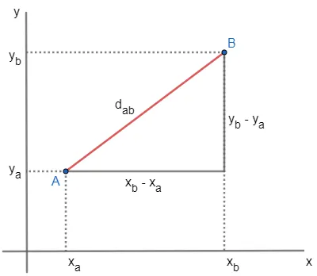
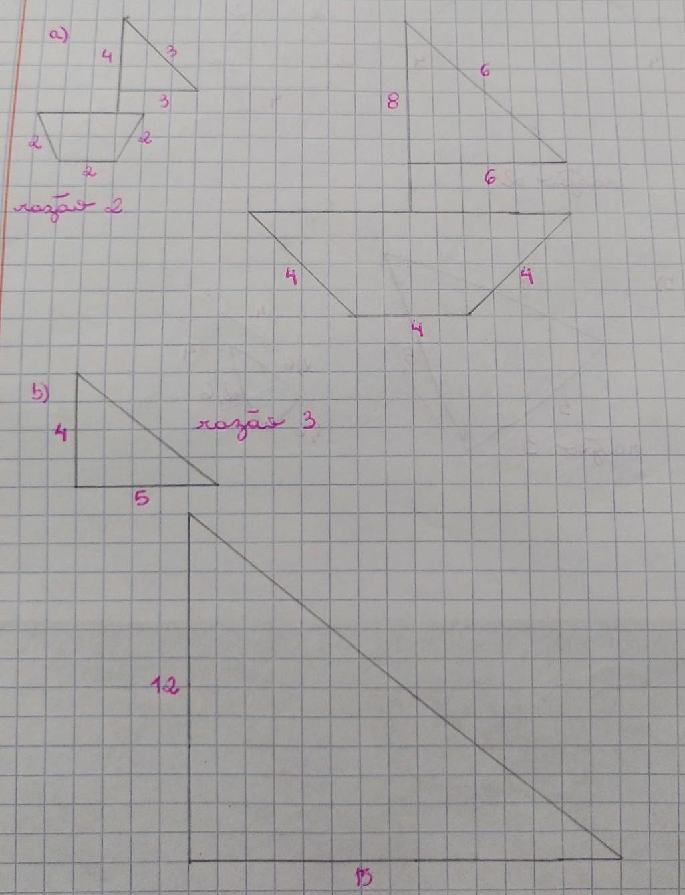
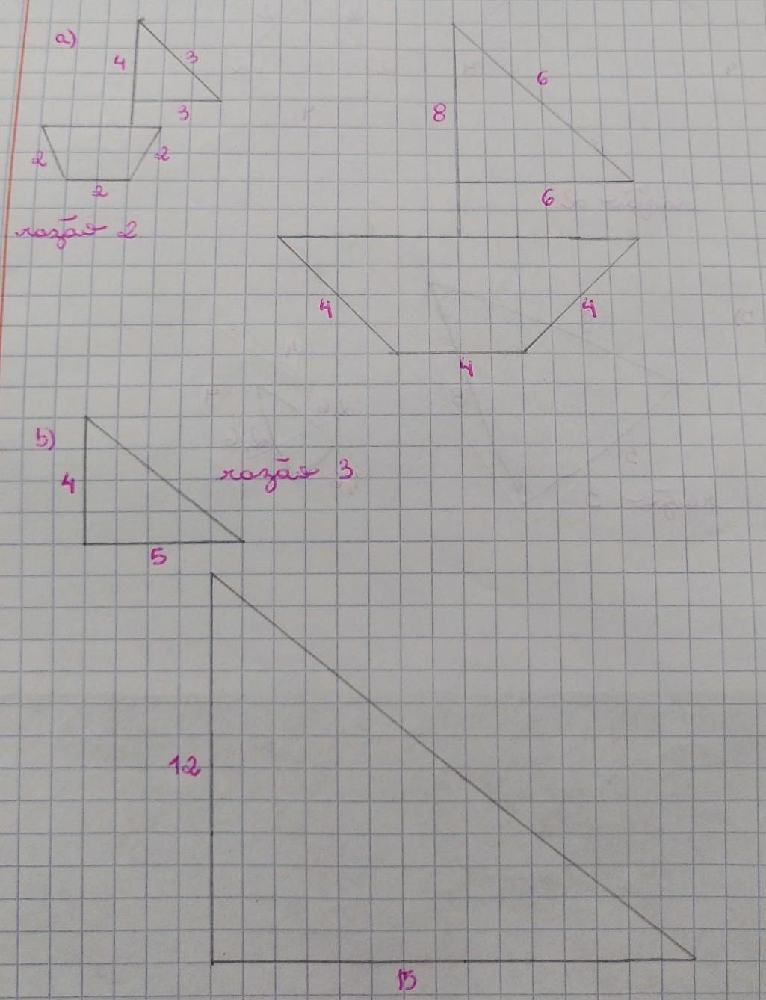

A criação e o desenvolvimento
Geometria é uma palavra de origem grega que significa: “geo”, terra, e “metria”, que vem da palavra “métron” e significa medir.
A criação e o desenvolvimento da geometria contaram com os estudos de diversos gênios da matemática. Os gregos Tales de Mileto, Pitágoras e Euclides foram os primeiros a dar forma a este estudo. No século 18, o suíço Leonhard Euler decifrou dois enigmas que há séculos não tinham solução. Tempos depois, Carl Friedrich Gauss deu início a uma revolução no estudo da matemática, que deu base à Teoria da Relatividade de Albert Einstein. Esses foram alguns dos grandes estudiosos responsáveis por desvendar o espaço e suas formas.

Euclides

Pitagoras

Tales de Mineto
Acredita-se que as primeiras medições de distâncias, áreas e volumes tenham surgido de necessidades do dia a dia. Civilizações antigas, como a babilônica e a egípcia, precisavam medir as terras para demarcar os limites das propriedades e de plantações, projetar templos e pirâmides, prever o movimento dos astros. Para delimitar as áreas de cultivo, os antigos faraós nomeavam os agrimensores, funcionários que deviam avaliar os prejuízos decorrentes das cheias dos rios e restabelecer as fronteiras entre as diversas propriedades. Existem três principais tipo de geometria elas são divididas em: Geometria Plana, Espacial e Analítica.
Formas Planas
A geometria plana ou euclidiana é a parte da matemática que estuda as figuras que não possuem volume. A geometria plana também é chamada de euclidiana, uma vez que seu nome representa uma homenagem ao geômetra Euclides de Alexandria, considerado o “pai da geometria”. Alguns conceitos são de suma importância para o entendimento da geometria plana, a saber como o ponto e a reta. O Conceito adimensional, uma vez que não possui dimensão. Os pontos determinam uma localização e são indicados com letras maiúsculas. A reta, representada por letra minúscula, é uma linha ilimitada unidimensional (possui o comprimento como dimensão) e pode se apresentar em três posições sendo elas horizontal, vertical e inclinada. E claramente as formas planas podem ser classificadas em polígonos e não polígonos.
"Os polígonos são linhas fechadas formadas apenas por segmentos de reta que não se cruzam a não ser em suas extremidades. Esses segmentos de reta nos polígonos são chamados de lados, assim, outra definição, mais comum que a primeira, é a seguinte: polígonos são figuras geométricas inteiramente formadas por lados. Em outras palavras, para que uma figura seja considerada um polígono, ela não pode conter qualquer lado que faça curva, dois de seus lados não podem se cruzar e a figura não pode ter aberturas.

São formas geométricas não delimitadas totalmente por segmentos de retas e podem ser abertas ou fechadas. Nem todas as figuras planas podem ser classificadas como polígonos, sendo assim as conhecemos como não polígonos. Para não ser um polígono, basta não satisfazer uma das características da sua definição, por exemplo: se a figura plana tem curvas ou se os segmentos interceptam-se ou então se a figura não for fechada, ela não será um polígono. Círculos e setores circulares são exemplos de não polígonos bastante presentes em nossa realidade

Geometria espacial
A geometria espacial é responsável pelo estudo das figuras geométricas espaciais, também chamadas de sólidos geométricos, que ocupam lugar no espaço, devido sua característica de tridimensionalidade (altura, largura e comprimento). Cubos, prismas, pirâmides e cones são alguns sólidos explorados por essa subárea da geometria. A geometria é um ramo da matemática que estuda as medidas e as propriedades das figuras, sendo dividida em duas subáreas, além da geometria espacial: a geometria plana (responsável pelo estudo do plano e do espaço) e a geometria analítica (que possui relação com a álgebra e a análise matemática).

Geometria analítica
Geometria analítica é um campo da matemática em que é possível representar elementos geométricos, como pontos, retas, triângulos, quadriláteros e circunferências, utilizando expressões algébricas. As expressões algébricas são derivadas da ideia de união de pontos que seguem determinado padrão. A geometria analítica tem como principal objetivo descrever objetos geométricos utilizando um sistema de coordenadas, o plano cartesiano. Este consiste em dois eixos reais perpendiculares entre si. O eixo horizontal é chamado de eixo das abscissas, e o eixo vertical é chamado de eixo das ordenadas.
A distância entre os pontos A (xa, ya) e B (xb, yb) é definida pelo segmento de reta AB, que vamos denotar dAB. Veja como obter o tamanho desse segmento, ou seja, a distância.
Trabalhos realizado em sala de aula


 

.png)
.png )
.png )
.png)
.png)
.png )